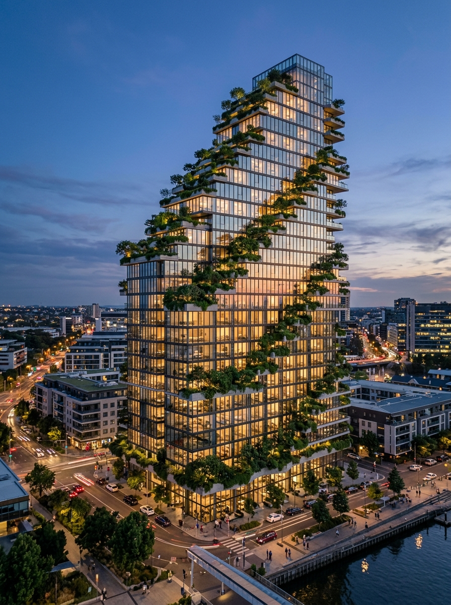
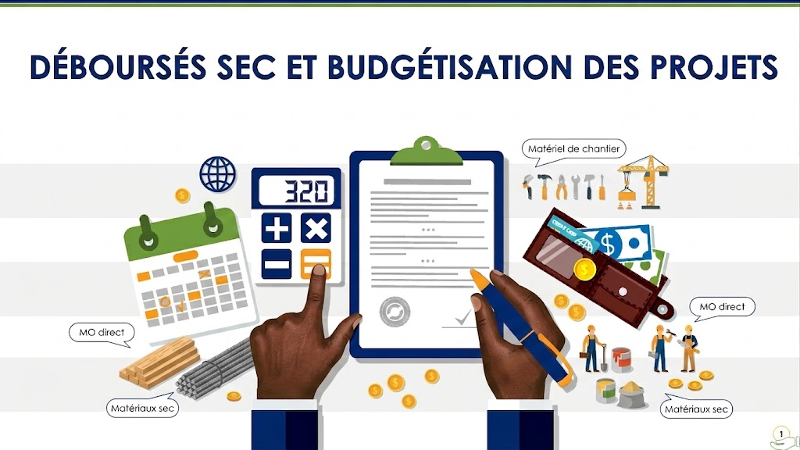
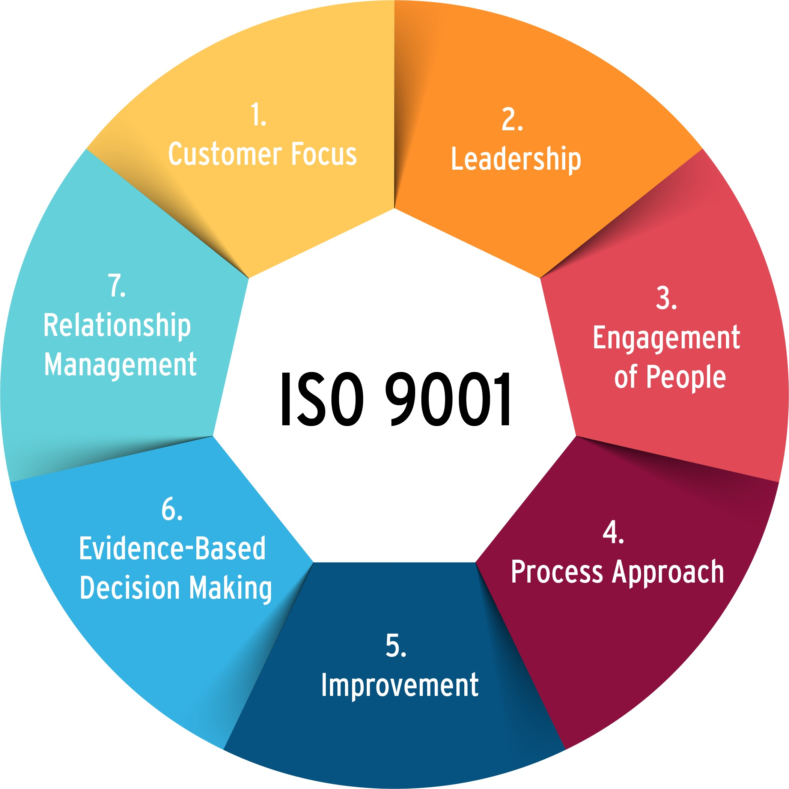
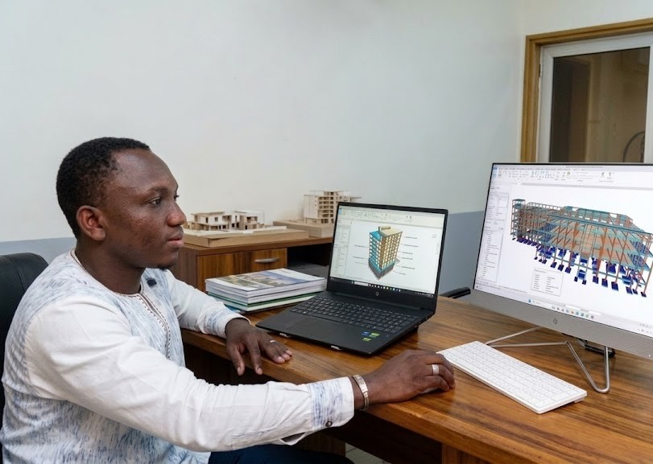

01
Calcul & Dimensionnement

Dimensionnement rigoureux des structures en béton armé et charpentes métalliques sous Robot Structural Analysis et CypeCAD.
Ingénieur diplômé de 2iE fort de 5 années d'expertise entre pilotage d'études de structures (béton armé & charpentes métalliques), suivi-contrôle rigoureux sur le terrain et démarche qualité ISO 9001. De l'analyse des dossiers d'exécution à la réception des travaux, je garantis la qualité des ouvrages, la maîtrise des budgets et le respect des délais.

Une approche globale de l'ingénierie civile, de la modélisation structurale aux études économiques et au contrôle de conformité.
Dimensionnement rigoureux des structures en béton armé et charpentes métalliques sous Robot Structural Analysis et CypeCAD.

Établissement des déboursés secs analytiques, métrés détaillés et budgétisation rigoureuse pour garantir la rentabilité des chantiers.
Contrôle technique rigoureux d'exécution (terrassement, gros œuvre, second œuvre), conformité aux plans et réception des travaux.

Pilotage du système de management de la qualité.
Ingénieur Génie Civil fort de 5 années d'expertise entre pilotage d'études de structure, suivi-contrôle sur le terrain et démarche qualité ISO 9001. De l'analyse des dossiers d'exécution à la réception des travaux, je garantis la qualité des ouvrages, la maîtrise des budgets et le respect des délais.

Une sélection d'infrastructures dimensionnées avec rigueur technique.
Un cursus académique d'excellence classé par ordre chronologique décroissant (2025 à 2016).
2iE Ouagadougou (Score officiel : 640/990 – Décembre 2025)
2iE - Institut International d'Ingénierie de l'Eau et de l'Environnement
2iE - Institut International d'Ingénierie de l'Eau et de l'Environnement (Ouagadougou)
VERECHAGUINE AK à Cotonou au Bénin
VERECHAGUINE AK à Cotonou au Bénin
Délivrance Officielle (Poids Lourds & Véhicules de Chantier)
Diplômé de 2iE • Calcul de Structures • Déboursé Sec • Démarche Qualité ISO 9001 • Suivi de Chantier
Ingénieur Génie Civil fort de 5 années d'expertise entre pilotage d'études de structure, suivi-contrôle sur le terrain et démarche qualité ISO 9001. De l'analyse des dossiers d'exécution à la réception des travaux, je garantis la qualité des ouvrages, la maîtrise des budgets et le respect des délais. Fiable, doté d'une forte culture de la qualité et de la sécurité, je mets mon autonomie et mon sens du résultat au service de votre entreprise pour le pilotage de projets structurants.
• Pilotage du système de management de la qualité (SMQ) et reporting stratégique des activités de la
section étude ;
• Élaboration du déboursé sec, des plans d’exécution et budgétisation du projet de Construction de
25 Centres de Santé (PRSS-ASN) pour le Ministère de la Santé ;
• Élaboration du déboursé sec et budgétisation du projet de Renforcement de la sécurisation des
postes douaniers ;
• Conception, dimensionnement, suivi et contrôle d'un bâtiment R+2 en structure métallique avec
cloisonnement en parpaing ;
• Dimensionnement d’un amphithéâtre de 350 places et aménagement de piste rurale à Koudougou.
• Métré de l’immeuble de bureaux R+2 pour le nouveau bureau pays du Programme Alimentaire Mondial
(PAM) ;
• Métré d'un bâtiment R+4 avec sous-sol et édicule ;
• APD pour la Banque Nationale de Gènes Phylogénétiques et étude de prix d'une centrale thermique ;
• Suivi et contrôle des travaux de réhabilitation du monument des héros nationaux à Ouagadougou.
• Suivi et contrôle technique des travaux de construction pour garantir la conformité aux plans ;
• Expertise technique, notes de calcul de structures et dimensionnement bâtiment R+2 à Kouba.
• Montage de dossiers d'appels d'offres (DAO) et de dossiers d'agrément technique ;
• Suivi-contrôle des travaux et établissement des devis quantitatifs et estimatifs.
AutoCAD, ArchiCAD, ROBOT Structural Analysis, CypeCAD, Arche Ossature, Covadis, Alize LCPC, MS Project, Microsoft Office.
Langues :
• Français : Parfait
• Anglais : Intermédiaire (Score TOEIC : 640/990 – 2iE)
• Mooré : Parfait